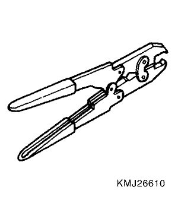
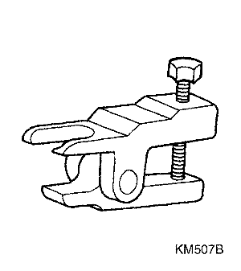
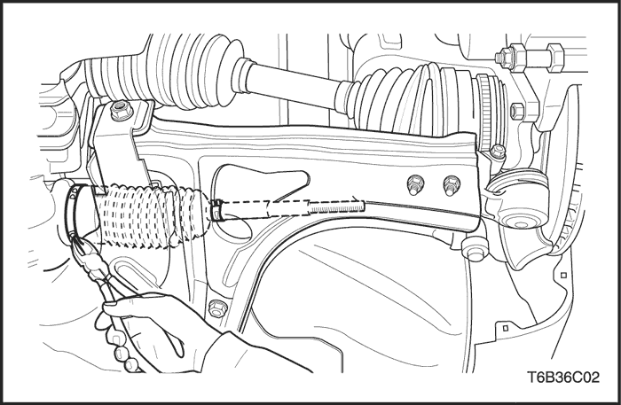
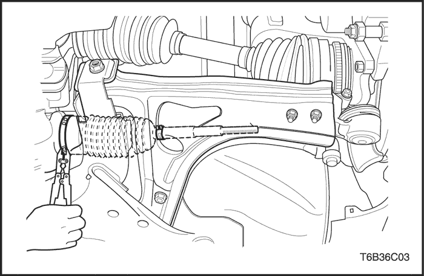

SECCIÓN 6D
MECANISMO DE DIRECCIÓN MANUAL
Precaución: Desconecte el cable negativo de la batería antes de desmontar o instalar cualquier unidad eléctrica o cuando exista la posibilidad de que una herramienta o equipo pueda entrar en contacto con bornes eléctricos expuestos. La desconexión de dicho cable ayudará a evitar lesiones personales y daños al vehículo. La llave de contacto debe estar en posición LOCK a menos que se indique lo contrario.
ESPECIFICACIONES
Especificaciones generales
| Aplicación | Descripción |
| Tipo | Cremallera y piñón |
| Avance de cremallera | 32,17 mm/rev. |
| Carrera de la cremallera | 139 ± 1.0 mm |
| Ángulo de dirección | Interior | 39,5° |
| Exterior | 33° |
| Cremallera | Recto (límite de curvatura) | 0.1 mm |
Especificaciones de apriete de la sujeción
| Aplicación | N•m | Lb-pie | Lb-pulg. |
| Tornillo de presión de la brida de acoplamiento | 22 | 16 | - |
| Tuerca de bloqueo del tirante exterior | 45 | 33 | - |
| Tuerca hexagonal del tirante exterior | 50 | 37 | - |
| Tuercas o tornillos del soporte de sujeción del mecanismo de dirección | 60 | 44 | - |
HERRAMIENTAS ESPECIALES
Tabla de herramientas especiales

 
| KM-J-26610 Instalador |

| KM-507-B Extractor de rótulas |
DIAGNÓSTICO
Mecanismo de la dirección manual de piñón y cremallera
Juego o flojedad excesiva en el sistema de dirección
| Comprobaciones | Acción |
| Compruebe el ajuste del mecanismo de la dirección. | Efectúe una comprobación de la marcha recta. |
| Compruebe si los cojinetes de rueda están desgastados o dañados. | Sustituya el cojinete de rueda. |
| Compruebe si los tirantes exteriores están mal montados. | Apriete los tirantes. |
Ruido de tableteo en el mecanismo de la dirección
| Comprobaciones | Acción |
| Compruebe si el mecanismo de la dirección presenta una lubricación insuficiente e inadecuada. | Lubrique el conjunto de la cremallera. Lubrique el conjunto del piñón. |
| Compruebe si la fijación del mecanismo de la dirección está mal montado. | Apriete las tuercas y tornillos de la fijación del mecanismo de la dirección. |
| Compruebe si los tirantes exteriores están mal montados. | Apriete los tirantes. |

Comprobación de la marcha recta
Una vez completadas todas las operaciones en el mecanismo de dirección, compruebe la posición exacta de la marcha - recta de la dirección en cada caso.
Con el vehículo sobre el suelo, coloque el volante en posición de marcha en línea recta hacia adelante. Marque el eje de los dos neumáticos en el suelo. Gire el volante completamente hacia la derecha y marque el nuevo eje de los dos neumáticos en el suelo.
Tabla de comprobación de la marcha recta
| Paso | Medida | Valor(es) | Sí | No |
| 1 | Coloque el volante en posición de marcha recta. ¿Está el volante en la posición correcta? | - | Vaya al Paso 2 | - |
| 2 | ¿Queda en posición horizontal el tornillo de presión de la brida de acoplamiento de la dirección? | - | Vaya al Paso 3 | Vaya al Paso 4 |
| 3 | ¿Está el volante descentrado en más de 5 grados? | - | Vaya al Paso 5 | Vaya al Paso 6 |
| 4 | El piñón está desplazado en la cremallera. Debe corregirse la posición del piñón de la dirección. ¿Se ha realizado la reparación? | - | Vaya al Paso 2 | - |
| 5 | Desmonte el volante y céntrelo sobre las estrías del eje. ¿Se ha realizado la reparación? | - | Vaya al Paso 3 | - |
| 6 | Gire el volante completamente hacia la derecha. Mida los ángulos interior y exterior del eje de los neumáticos en comparación con el eje en línea recta. ¿Coinciden los ángulos con el valor especificado? | Ángulo interior: 39° 5'± 1° 30' Ángulo exterior: 34° ± 1° 30' | Sistema OK | Vaya al Paso 7 |
| 7 | El conjunto de la cremallera no se montó correctamente. Haga las reparaciones necesarias. ¿Se ha realizado la reparación? | - | Vaya al Paso 6 | - |
MANTENIMIENTO Y REPARACIÓN
SERVICIO EN EL VEHÍCULO

Conjunto de cremallera y piñón
Herramientas necesarias
Extractor de rótulas KM-507-B
Procedimiento de desmontaje
- Gire el volante hasta dejar los neumáticos en línea recta.
- Desmonte el eje intermedio. Consulte la Sección 6E, Volante y columna de dirección.
- Desmonte los neumáticos delanteros.

- Quite las tuercas hexagonales del tirante exterior. Consulte el apartado "Tirante exterior" de esta sección.

- Quite las tuercas hexagonales de la rótula y desconecte la barra estabilizadora de la mangueta desmontando para ello el conjunto de la articulación de la barra estabilizadora. Consulte la Sección 2C, Suspensión delantera.

- Desmonte el travesaño quitando las tuercas y tornillos que lo unen a los bajos de la carrocería.

- Desmonte el conjunto de cremallera y piñón retirando las tuercas del soporte de sujeción del mecanismo de dirección.
Procedimiento de montaje
- Monte el conjunto de cremallera y piñón poniendo las tuercas del soporte de sujeción del mecanismo de dirección.
Apretar
Apriete las tuercas del soporte de sujeción del mecanismo de dirección hasta 60 N•m (44 lb-pie).
- Monte el travesaño apretando las tuercas y tornillos que lo unen a los bajos de la carrocería.
Apretar
Apriete el travesaño apretando las tuercas y tornillos que lo unen a los bajos de la carrocería hasta 170 N•m (125 lb-pie).
- Coloque las tuercas hexagonales de la rótula y una la barra estabilizadora a la mangueta apretando el tornillo con el conjunto de la articulación de la barra estabilizadora. Consulte la Sección 2C, Suspensión delantera.
Apretar
Apriete las tuercas hexagonales de la rótula a la mangueta hasta 55 N•m (41 lb-pie). Apriete los tornillos de la barra estabilizadora a la mangueta hasta 50 N•m (37 lb-pie).
- Coloque las tuercas hexagonales del tirante exterior.
Apretar
Apriete las tuercas hexagonales del tirante exterior hasta 50 N•m (37 lb-pie).
- Monte los neumáticos delanteros. Consulte la Sección 2E, Neumáticos y ruedas.
- Monte el eje intermedio. Consulte la Sección 6E, Volante y columna de dirección.
- Monte el volante y la columna de dirección.
Importante: Después de realizar todas las operaciones necesarias con el engranaje de dirección, asegúrese de comprobar la posición de marcha recta exacta de la dirección en todos los casos. Consulte el apartado "Comprobación de la marcha recta" de esta sección.

Tirante exterior
Herramientas necesarias
Extractor de rótulas KM-507-B
Procedimiento de desmontaje
- Desmonte la rueda. Consulte la Sección 2E, Neumáticos y ruedas.
- Quite la tuerca hexagonal del tirante exterior y desconecte dicho tirante de la mangueta utilizando la herramienta especial KM-507-B.

- Afloje las contratuercas del tirante y desmonte el tirante exterior.
Importante: Antes de aflojar la tuerca del tirante, marque la posición de la contratuerca para facilitar la alineación posteriormente durante el procedimiento de montaje.
Procedimiento de montaje
- Vuelva a colocar la tuerca de bloqueo según las marcas del tirante interior.
- Monte el tirante exterior girándolo sobre el tirante interior.
- Conecte el tirante exterior a la mangueta.
- Realice un ajuste de la convergencia/divergencia delantera. Consulte la Sección 2B, Alineación de las ruedas.
- Monte el tirante exterior apretando las contratuercas hasta 54 N•m (40 lb-pie).
- Coloque la tuerca hexagonal del tirante exterior.
Apretar
Apriete la tuerca hexagonal del tirante exterior hasta 50 N•m (37 lb-pie).
- Monte la rueda. Consulte la Sección 2E, Neumáticos y ruedas.

Guardapolvo
Herramientas necesarias
Procedimiento de desmontaje
- Levante y apoye el vehículo adecuadamente.
- Desmonte la rueda. Consulte la Sección 2E, Neumáticos y ruedas.
- Desmonte el tirante exterior. Consulte el apartado "Tirante exterior" de esta sección.
- Desmonte las abrazaderas de fijación del guardapolvo.
- Desmonte el guardapolvo.

Procedimiento de montaje
- Monte el guardapolvo.
- Monte la abrazadera de fijación del guardapolvo del extremo del tirante. Coloque la abrazadera de fijación del guardapolvo del extremo del cilindro con el instalador KM-J-22610.
- Monte el tirante exterior. Consulte el apartado "Tirante exterior" de esta sección.
- Monte la rueda. Consulte la Sección 2E, Neumáticos y ruedas.
- Baje el vehículo.
Comprobación de la marcha recta
Una vez completadas todas las operaciones en el mecanismo de dirección, compruebe la posición exacta de la marcha - recta de la dirección en cada caso.
Con el vehículo sobre el suelo, coloque el volante en posición de marcha en línea recta hacia adelante. Marque el eje de los dos neumáticos en el suelo. Gire el volante completamente hacia la derecha y marque el nuevo eje de los dos neumáticos en el suelo.
Tabla de comprobación de la marcha en línea recta
| Paso | Medida | Valor(es) | Sí | No |
| 1 | Coloque el volante en posición de marcha en línea recta ¿Está el volante en la posición correcta? | - | Vaya al Paso 2 | - |
| 2 | ¿Queda en posición horizontal el tornillo de presión de la brida de acoplamiento de la dirección? | - | Vaya al Paso 3 | Vaya al Paso 4 |
| 3 | ¿Está el volante descentrado en más de 5 grados? | - | Vaya al Paso 5 | Vaya al Paso 6 |
| 4 | El piñón está desplazado en la cremallera. Debe corregirse la posición del piñón de la dirección. ¿Se ha realizado la reparación? | - | Vaya al Paso 2 | - |
| 5 | Desmonte el volante y céntrelo sobre las estrías del eje. ¿Se ha realizado la reparación? | - | Vaya al Paso 3 | - |
| 6 | Gire el volante completamente hacia la derecha. Mida los ángulos interior y exterior del eje de los neumáticos en comparación con el eje en línea recta. ¿Coinciden los ángulos con el valor especificado? | Ángulo interior: 39° 5'± 1° 30' Ángulo exterior: 34° ± 1° 30' | Sistema OK | Vaya al Paso 7 |
| 7 | El conjunto de la cremallera no se montó correctamente. Haga las reparaciones necesarias. ¿Se ha realizado la reparación? | - | Vaya al Paso 6 | - |
DESCRIPCIÓN GENERAL Y FUNCIONAMIENTO DEL SISTEMA
Piñón y cremallera de accionamiento manual
El sistema de dirección manual de piñón y cremallera consta de dos componentes principales: la cremallera y el piñón. El movimiento del piñón se transfiere a través los dientes del piñón, que engranan con los dientes de la cremallera, haciendo que ésta se mueva. Esa fuerza se transmite a continuación por medio de las palancas en los conjuntos soportes, que hacen girar las ruedas.